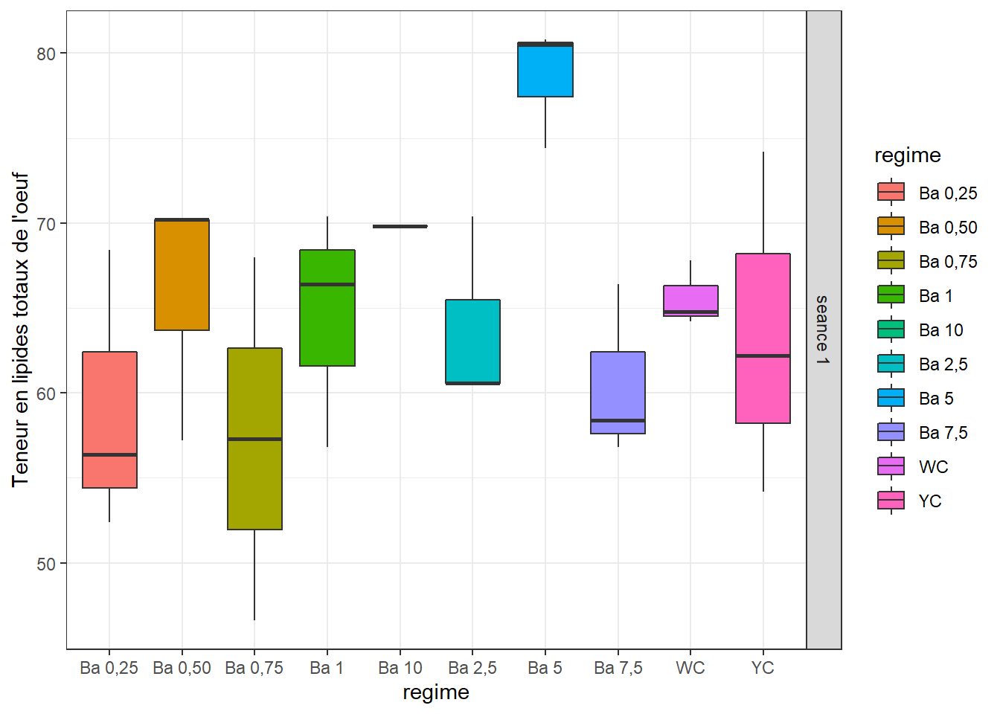
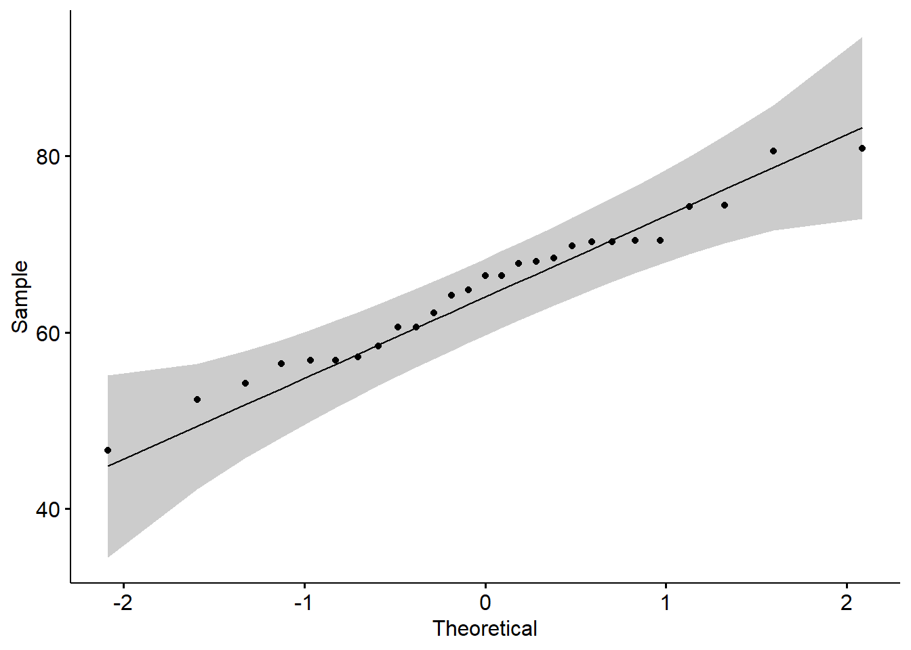
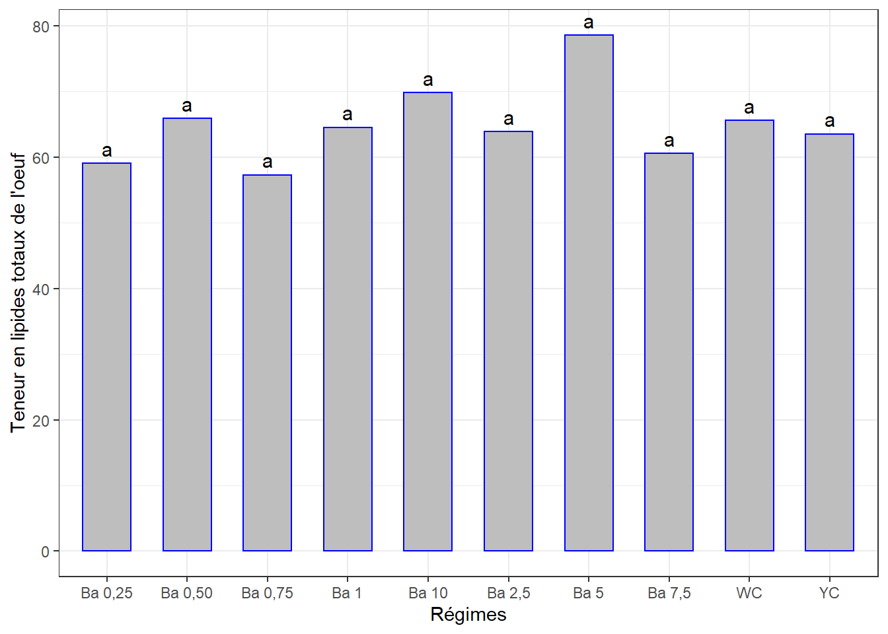

Chapitre 17 Teneur en lipides des oeufs
La démarche sera la même que celle des chapitres précédents. Il se peut qu’il y ait moins de commentaires.
Même jeu de données oeuf.csv qui contient différentes mesures dont la teneur en lipides totaux de l’oeuf, mesurée en 1 séance. Mêmes traitements (régimes).
La question est de savoir si les différents régimes induisent des teneurs en lipides totaux des oeufs significativement différents.
17.1 Les données
lip <- read_csv("data/oeuf.csv")
lip <- lip %>%
select(seance, regime, no_oeuf, lip_tot) %>%
mutate(id = rep(1:30, 5), .before = 1) %>%
convert_as_factor(id, seance, regime) %>%
filter(seance == "seance 1")## Rows: 30
## Columns: 5
## $ id <fct> 1, 2, 3, 4, 5, 6, 7, 8, 9, 10, 11, 12, 13, 14, 15, 16, 17, 18,~
## $ seance <fct> seance 1, seance 1, seance 1, seance 1, seance 1, seance 1, se~
## $ regime <fct> "Ba 0,25", "Ba 0,25", "Ba 0,25", "Ba 0,50", "Ba 0,50", "Ba 0,5~
## $ no_oeuf <dbl> 1, 2, 3, 1, 2, 3, 1, 2, 3, 1, 2, 3, 1, 2, 3, 1, 2, 3, 1, 2, 3,~
## $ lip_tot <dbl> 56.4, 52.4, 68.4, 70.2, 70.2, 57.2, 68.0, 46.6, NA, 66.4, 56.8~17.2 Visualisation boxplots
bxp <- ggplot(lip, aes(x = regime, y = lip_tot, fill = regime)) +
geom_boxplot() +
facet_grid(seance ~ .) +
theme(axis.text.x = element_text(angle = 90, color = "blipk", vjust = 0.5, hjust = 1)) +
ylab("Teneur en lipides totaux de l'oeuf") +
theme_bw()
bxp## Warning: Removed 3 rows containing non-finite values (stat_boxplot).
=> Variations notables entre les traitements.
17.3 Détection des observations aberrantes extrêmes
## [1] id seance regime no_oeuf lip_tot is.outlier is.extreme
## <0 rows> (or 0-length row.names)=> Pas d’observations aberrantes extrêmes.
17.4 Conditions de l’ANOVA
17.4.1 Normalité
Si les données sont normalement distribuées, la p-value de Shapiro-Wilk doit être supérieure à 0,05 pour chaque régime.
## # A tibble: 1 x 3
## variable statistic p
## <chr> <dbl> <dbl>
## 1 lip_tot 0.978 0.816=> Normalité Okay. Mais on verra bien le comportement des résidus de l’ANOVA.
Créer des QQ-plots pour chaque point par séance

17.4.2 Homogénéité des variances
## # A tibble: 1 x 4
## df1 df2 statistic p
## <int> <int> <dbl> <dbl>
## 1 9 17 0.735 0.673=> Valeur-p > 0.05 => variances homogènes.
17.5 ANOVA
17.5.1 Le modèle
## Anova Table (Type II tests)
##
## Response: lip_tot
## Sum Sq Df F value Pr(>F)
## regime 872.25 9 1.7694 0.1487
## Residuals 931.15 17La p-value > 0.05 => pas de différence significative entre les effets des régimes sur la teneur en protéines.
## # A tibble: 1 x 3
## variable statistic p.value
## <chr> <dbl> <dbl>
## 1 residuals(lm) 0.973 0.680=> Normalité Okay.
17.5.1.1 Comparaisons par paires
cm <- (SNK.test(lm, "regime", group = TRUE))$groups %>%
mutate(regime = rownames(.)) %>%
select(regime, lip_tot, groups) %>%
as_tibble()
cm## # A tibble: 10 x 3
## regime lip_tot groups
## <chr> <dbl> <chr>
## 1 Ba 5 78.6 a
## 2 Ba 10 69.8 a
## 3 Ba 0,50 65.9 a
## 4 WC 65.6 a
## 5 Ba 1 64.5 a
## 6 Ba 2,5 63.9 a
## 7 YC 63.5 a
## 8 Ba 7,5 60.5 a
## 9 Ba 0,25 59.1 a
## 10 Ba 0,75 57.3 aggplot(data = cm, mapping = aes(x = regime, y = lip_tot)) +
geom_bar(stat = "identity", color = "blue", fill = "grey", width = 0.6) +
#ylim(0, 80) +
geom_text(aes(label = groups), vjust = -0.5, size = 4) +
xlab("Régimes") + ylab("Teneur en lipides totaux de l'oeuf") +
theme(axis.text.x = element_text(angle = 45, color = "black", vjust = 1, hjust = 1)) +
theme_bw()